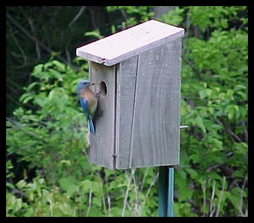

Nature Tales
Click here to break out of frames.
|
Wing Watchers would like to entertain you, with an occasional short story or observation of the funny but interesting things that have happened to us during our quest to observe birds and nature. These are true Tales and are given to you, perhaps, to enjoy or even help you relate to a natural happening of your own observations. This section will be updated with a new story or observation as they happen for us. That's the beauty of Mother Nature, you never know what will happen next. Happy observing. |

"Bluebird, Bluebird at My Window"
by Dave Pelletier

A couple years ago, my wife Judy and I placed our first set of bird houses out in the two acre field next to our home. My brother had made them as a birthday present to me, that spring. Being a carpenter by trade, he built them to perfect dimension for Eastern Bluebirds. So out they went with the hopes of attracting and watching these beautiful birds raise a family.
The first year went by with out any Blue birds, we were somewhat disappointed. We turned our attention to other species like Black-capped Chickadees and a pair of Tree Swallows that probably figured they would grab a home before those Bluebirds got there. It was fun watching both species build, lay eggs, feed and raise their young. That year we watched with pride at the fact we had helped nature to prosper.
Then this year came with many migrant birds visiting our feeders. The same species of birds were eyeing the bird houses making their family plans and preparing to reconstruct or re-build their old nests. All of a sudden, one early morning this past May, they showed. The Eastern Bluebirds had somehow spotted our quaint little homes that we left just for them. We had made sure, when the houses were placed, that they faced away from the general direction that most storms rolled in. We also used a tip from a fellow birder named Ron, to try to place the house close to a tree or other landable source, for the fledglings' first flight.
The owners of this mountain, with all its natural beauty, reported to Judy and me, that the Eastern Bluebirds used to be plentiful in the field where our cabin is. But somehow, mysteriously, they vanished. Had there been some serious ecological change here? That was our thought when we first heard this. We had no way of knowing for sure, but we still placed the houses out in the field. After fifteen years, this species has returned and warrants this short story.
Meanwhile, back to our observations of nature replenishing itself. Every morning and several times a day, the male Bluebird would prop himself atop one house and sing his beautiful melody. Sometimes he would enter the opening carrying a few long reeds of hay or grass and then re-appear without it. Next, the female would land and, after eyeing the surroundings and probably searching for the danger zones, would enter the opening. Once she came back out of the house carrying the grass reeds her mate had presented to her. She dropped them to the ground from atop this house and immediately flew off to the next house.
After a few days of this interesting behavior, the female finally appeared to accept her mates offering and the chore of building a suitable home for their new family began. We couldn't figure out why only the female was seen, after the acceptance, entering and leaving with a variety of materials. We had to start reading up on these things and found out that the male usually doesn't help with the nest building. That was an interesting fact to learn.
Things were about to change as the hectic project of building came to an apparent end. During the next couple weeks the pair could be seen flying all around the field capturing flies and bugs for their lunch. Sometimes we would observe the male entering the opening with an offering of a beetle for her and leaving without it. Again, the books were brought out. The female bluebird is also the one that does most of the incubating of her eggs. Another neat little tidbit to know. The books we've read say incubation of the Eastern Bluebird's eggs takes 13-16 days. After hatching, the newbies will remain in the house for another two to three weeks.
By our observations, the books were pretty correct, for out they came in a little over two weeks. So cute with their speckled breasts and their awkwardness. Nature seemed to have played a little trick on birds. Humans and other mammals learn to walk and move about while on the ground. The poor fledglings just flapped their wings and immediately fell to the the soft grass below. A tough way to enter the world but they are naturally adapted to this. Finally, after a few tries, the new brood of four were able to awkwardly make their way to the nearby Beech tree. Mom and Dad could be proudly seen perching above with their family, on the telephone wires. Then all was silent, one day, had the young learned to fend for themselves? I trust that they did learn. Good luck little Bluebirds.
You would have thought that this was a good ending to a cycle of breeding by Eastern Bluebirds but hold on! There's more! The fledglings are nowhere to be seen lately, but the male and female (I'm assuming it's them) have returned to the same nestbox and it appears they are going to start the cycle again. Ha! Again the books came out. Pictures of the first cycle may be seen in our Bird Photo section. We didn't want to disturb this family and possibly put an early end to our new friends, so no photos of nest, eggs or early fledglings were taken. It's a great thing to be able to observe our Maker's creatures up close and personal.
|

Nature
Tale#2
Nature
Tale#3
Nature
Tale#4
Nature
Tale#5

| Except
as noted, site content and photographs copyright � 2003 Dave
Pelletier aka Wing Watchers, all rights reserved. |

Home |Bird Photos
1 |Bird Photos 2 |Bird
Sightings |Directions
Cathi's Page |Nature
Photos |Birding Tips |Email
|Banners |What?
Crawly Things 1 |Crawly
Things 2 |Fledglings |Links
|Awards and Webrings
|
|